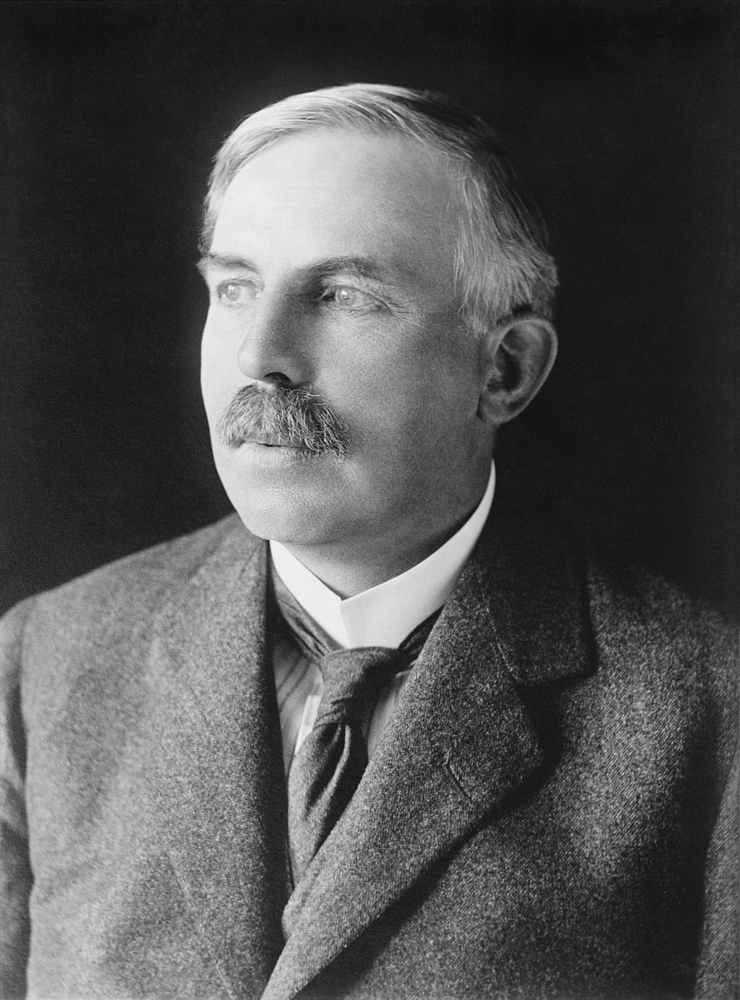
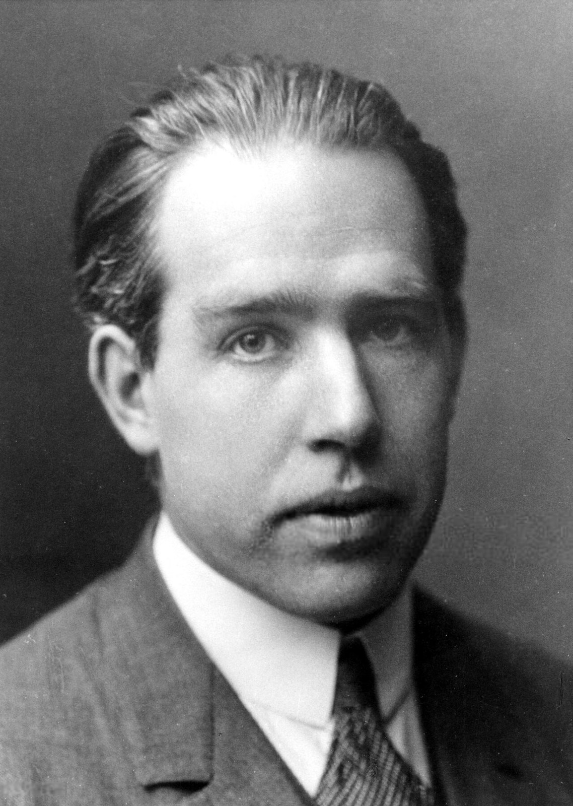

From Rutherford's nucleus to Bohr's atom
Why does glowing hydrogen give off light of only a few colours, while a hot metal glows in all of them?
Prior knowledge
- Light consists of photons with the energy $E = hf = hc/\lambda$chapter Light as particles: the photoelectric effect
- A hot body sends out a continuous spectrum of thermal radiationchapter When classical physics ran out of answers
- Charges of the same sign repel each other, and two charges at a distance $r$ have the electric potential energy $E_\text{p} = kq_1q_2/r$ (earlier physics courses)
Think about it
In 1904 J. J. Thomson, the discoverer of the electron, proposed a model of the atom. The atom is a ball of positive charge, spread evenly through it, with the tiny negative electrons sitting inside like raisins in a pudding. In 1909, in Manchester, Ernest Rutherford asked a young student, Ernest Marsden, to test the atom with fast alpha particles: heavy, positive particles that radioactive substances shoot out at about $2 \cdot 10^{7}\ \text{m/s}$. Marsden and Hans Geiger fired them at very thin metal foils, among them gold, and looked for them on a screen that flashes when an alpha particle hits it.
What can bullets that are far too small to see tell us about the inside of an atom?
Talk in pairs (2 minutes)
You are given a closed box and you may not open it. You may only throw small marbles in through a hole on one side and see where they come out. How could you find out whether the box holds cotton wool or a few heavy steel balls? Write down your idea: you will come back to it.
Sentence starters
- If the box holds cotton wool, the marbles would …
- If it holds a few steel balls, the marbles would …
- We could tell the difference by …
Predict
Prediction 1: alpha particles and gold
More predictions 1 question
Prediction 2: a bigger jump
Investigate
The gold-foil evidence
In 1909 Hans Geiger and the 20-year-old student Ernest Marsden worked in Ernest Rutherford's laboratory in Manchester. They shot alpha particles, fast and heavy positive particles from a radioactive source, at very thin metal foils. Each alpha particle that hit a zinc sulfide screen made a tiny flash of light. In a darkened room they counted the flashes through a microscope, for hours at a time.
Most alpha particles went through the foil and were turned aside by only a small angle. But a few bounced back: from a thin platinum foil, about one alpha particle in 8000 was turned through more than $90^\circ$. Nobody had expected this. Rutherford later said that it was "almost as incredible as if you fired a 15-inch shell at a piece of tissue paper and it came back and hit you".

In 1911 Rutherford explained the result. Almost all the mass and all the positive charge of an atom sit in a tiny nucleus at its centre. An alpha particle that passes far from a nucleus hardly feels it. Only the rare one that comes very close is pushed back by the strong electric repulsion. The figure shows such paths near one gold nucleus, to scale.
Read the paths
Look at the drawing of the alpha paths near one gold nucleus. Each path starts at a different distance $b$ from the line through the centre of the nucleus. The scale bar shows $50\ \text{fm}$, but a whole gold atom is about $290\,000\ \text{fm}$ across.
The spectrum of hydrogen
A gas discharge tube contains a thin gas, and a high voltage between its ends makes the gas glow. When you look at the glow of hydrogen through a diffraction grating or a spectroscope, you do not see a rainbow. You see a line spectrum: four bright, thin lines of visible light, always at the same wavelengths.
In 1885 the Swiss teacher Johann Balmer found a simple formula that gives these four wavelengths, but nobody could say why it worked. Every element has its own pattern of lines, like a fingerprint. At the Fotoni lab visit you will look at the spectra of lamps and gas tubes yourself, at the station on spectra (unit Fotoni lab visit: modern physics experiments).
Review: photons from the photoelectric effect
Investigate: the energy of the red line
| Colour | Wavelength $\lambda$ (nm) |
|---|---|
| red | 656.3 |
| turquoise | 486.1 |
| blue | 434.0 |
| violet | 410.2 |
Each line is light of one wavelength. In the photon picture, every photon of the red line has the same energy. How large?
Source: Wavelengths of the visible hydrogen lines in air, as listed in Wikipedia, Balmer series, from NIST data, checked…
Calculate the energy of one photon of the red hydrogen line, $656.3\ \text{nm}$, in electronvolts. Keep the answer: you will compare it with Bohr's model.
Hint 1: a guiding question
The energy of one photon is $E = hf$, and $f = c/\lambda$.
Hint 2: what is the connection
$E = hc/\lambda$. You can use $hc = 1240\ \text{eV} \cdot \text{nm}$, so the wavelength can stay in nanometres.
Hint 3: an intermediate step
$E = 1240\ \text{eV} \cdot \text{nm} : 656.3\ \text{nm}$.
Show the solution
Given
$\lambda = 656.3\ \text{nm}$, $hc = 1240\ \text{eV} \cdot \text{nm}$ (that is, $6.626 \cdot 10^{-34}\ \text{J} \cdot \text{s} \cdot 2.998 \cdot 10^{8}\ \text{m/s}$ in electronvolts and nanometres). Find the photon energy $E$.
Principle
Light of one wavelength consists of photons with the same energy $E = hf$; with $f = c/\lambda$ this is $E = hc/\lambda$.
Formula
$E = hc/\lambda$.
Unit conversions
None: $hc$ is in $\text{eV} \cdot \text{nm}$ and $\lambda$ in nanometres, so the result is in electronvolts.
Substitution
Answer
$E \approx 1.89\ \text{eV}$
Three significant figures, like $hc$.
Reasonableness
Visible photons have $1.6\text{–}3.3\ \text{eV}$, and red ones are at the low end: $1.89\ \text{eV}$ fits. In joules:
Compare two spectra
Discuss with a partner, then write three or four sentences. Compare the light of glowing hydrogen gas with the light of a hot filament (unit When classical physics ran out of answers). What do you see through a grating in each case? What does the hydrogen spectrum suggest about the energy of the atom?
Word bank
a line spectrum · a continuous spectrum · a sharp line · a rainbow · a gas discharge tube · a filament · a fixed amount of energy · every / only certain wavelengths
Sentence starters
- The filament gives …, whereas hydrogen gives …
- Through the grating we see …
- One possible explanation is that the atom can only …
- This suggests that …
Model answer
The hot filament gives a continuous spectrum: through a grating we see a whole rainbow, with every wavelength, whereas glowing hydrogen gas gives a line spectrum of only four sharp visible lines, at $656$, $486$, $434$ and $410\ \text{nm}$. Each line contains photons of one energy, for example $1.89\ \text{eV}$ for the red line. This suggests that the hydrogen atom can only give out certain fixed amounts of energy, not any amount.
Assess your own answer
Tick the points your own answer already contains.
Review the theory.
Theory
Key idea
Rutherford's atom has a tiny, heavy, positive nucleus. The nucleus of gold has a radius of about $7\ \text{fm}$ ($1\ \text{fm} = 10^{-15}\ \text{m}$), while the gold atom has a radius of about $144\ \text{pm} = 1.44 \cdot 10^{-10}\ \text{m}$, about $20\,000$ times more. The atom is almost empty space, and the light electrons move around the nucleus.
But this atom raised a new problem. An electron moving round the nucleus is always accelerating, and classical physics says that an accelerating charge sends out electromagnetic radiation. The electron should lose energy, spiral into the nucleus and send out a continuous spectrum on the way. Real atoms are stable and give sharp lines. Classical physics had failed again.
Bohr's quantum atom
In 1913 the Danish physicist Niels Bohr, who had worked with Rutherford in Manchester, combined the nuclear atom with Planck's and Einstein's quanta. His model of hydrogen rests on three ideas:
- The electron can move only in certain allowed orbits, the stationary states. In them it does not radiate. Each state has its own energy level $E_n$, numbered by $n = 1, 2, 3, \ldots$
- The electron can jump from a higher level to a lower one. The atom then sends out one photon that carries away the difference in energy.
- A photon can be absorbed only if its energy is exactly the difference between two levels.
So a hot gas sends out only the photon energies that match jumps between its levels: a line spectrum. A bigger jump gives a photon of higher energy, so a higher frequency and a shorter wavelength. The four visible lines of hydrogen are the jumps that end at $n = 2$. The jumps that end at $n = 1$ are much bigger and give ultraviolet light.
Bohr's model gives the hydrogen lines very accurately, but it fails for atoms with more than one electron, and its electrons in neat circular orbits are not the whole truth. In the 1920s quantum mechanics replaced the orbits with waves and probabilities: the topic of the next unit. The idea of energy levels survived.
Energy levels of hydrogen
The energy levels of the hydrogen atom are
$$E_n = -\frac{13.6\ \text{eV}}{n^2}, \qquad n = 1, 2, 3, \ldots$$
The energy is negative, because the electron is bound: $13.6\ \text{eV}$ is needed to free it from the lowest level $n = 1$, the ground state. In a jump from level $n_\text{u}$ (upper) to $n_\text{l}$ (lower), energy is conserved:
$$hf = \frac{hc}{\lambda} = E_{n_\text{u}} - E_{n_\text{l}}$$
A useful product for these calculations is $hc = 1240\ \text{eV} \cdot \text{nm}$.
Words of the lesson
Back to your predictions
Compare your predictions with the gold-foil evidence and with Bohr's model. Then answer the opening question in one or two sentences: why does glowing hydrogen give off light of only a few colours? Also check that $E_3 - E_2$ from the energy levels gives your $1.89\ \text{eV}$ for the red line.
Would you change your prediction?
Optional People in this story
People in this story
Ernest Marsden (1889–1970)
Ernest Marsden was born in Lancashire, England. In 1909 he was a 20-year-old undergraduate at the University of Manchester when Rutherford asked him to check whether any alpha particles bounce back from a metal foil. With Hans Geiger he found that a few did, the observation that led to the nucleus. Later Marsden moved to New Zealand. From 1926 he led the country's new Department of Scientific and Industrial Research. His story shows how a careful student's measurement can change science.
Niels Bohr (1885–1962)

Niels Bohr was born and died in Copenhagen. After his doctorate he worked with Rutherford in Manchester in 1912, and back in Copenhagen he published his model of the atom in three papers in 1913. His institute in Copenhagen, opened in 1921, became a meeting place for the young physicists who built quantum mechanics. He received the Nobel Prize in Physics in 1922 "for his services in the investigation of the structure of atoms and of the radiation emanating from them". Bohr linked Rutherford's nucleus with Planck's quanta.
Examples
Example 1
Rutherford's reasoning showed how close an alpha particle can come to a nucleus. An alpha particle (charge $2e$, mass $6.64 \cdot 10^{-27}\ \text{kg}$) moves straight towards a gold nucleus (charge $79e$) at a speed of $2.0 \cdot 10^{7}\ \text{m/s}$. How close does it come before it turns back? Compare the distance with the size of the gold atom.
Step 1/7
Given: ${m = 6.64 \cdot 10^{-27}\ \text{kg}}$, ${v = 2.0 \cdot 10^{7}\ \text{m/s}}$, ${q_1 = 2e}$, ${q_2 = 79e}$, ${e = 1.602 \cdot 10^{-19}\ \text{C}}$, ${k = 8.988 \cdot 10^{9}\ \text{N} \cdot \text{m}^2/\text{C}^2}$. Find the closest distance $d$.
Step 2/7
Principle: Energy is conserved. Far from the nucleus the alpha particle has only kinetic energy. At the turning point it stops for a moment, and all its kinetic energy has become electric potential energy $E_\text{p} = kq_1q_2/r$. The heavy nucleus is assumed not to move.
Step 3/7
Formula: Solved in symbols:
$$\begin{aligned} \tfrac{1}{2}mv^2 &= \frac{kq_1q_2}{d} \\ d &= \frac{kq_1q_2}{\tfrac{1}{2}mv^2} \end{aligned}$$
Step 4/7
Unit conversions: The charges in coulombs:
The answer is changed to femtometres with $1\ \text{fm} = 10^{-15}\ \text{m}$.
Step 5/7
Substitution: $$\begin{aligned} E_\text{k} &= \tfrac{1}{2} \cdot 6.64 \cdot 10^{-27}\ \text{kg} \cdot (2.0 \cdot 10^{7}\ \text{m/s})^2 \\ &= 1.328 \cdot 10^{-12}\ \text{J} \\[6pt] kq_1q_2 &= 8.988 \cdot 10^{9}\ \tfrac{\text{N} \cdot \text{m}^2}{\text{C}^2} \cdot 3.204 \cdot 10^{-19}\ \text{C} \\ &\quad \cdot 1.266 \cdot 10^{-17}\ \text{C} = 3.645 \cdot 10^{-26}\ \text{J} \cdot \text{m} \\[6pt] d &= \frac{3.645 \cdot 10^{-26}\ \text{J} \cdot \text{m}}{1.328 \cdot 10^{-12}\ \text{J}} \\ &= 2.74 \cdot 10^{-14}\ \text{m} = 27\ \text{fm} \end{aligned}$$$$\begin{aligned} E_\text{k} &= \tfrac{1}{2} \cdot 6.64 \cdot 10^{-27}\ \text{kg} \\ &\quad \cdot (2.0 \cdot 10^{7}\ \text{m/s})^2 \\ &= 1.328 \cdot 10^{-12}\ \text{J} \\[6pt] kq_1q_2 &= 8.988 \cdot 10^{9}\ \tfrac{\text{N} \cdot \text{m}^2}{\text{C}^2} \\ &\quad \cdot 3.204 \cdot 10^{-19}\ \text{C} \\ &\quad \cdot 1.266 \cdot 10^{-17}\ \text{C} \\ &= 3.645 \cdot 10^{-26}\ \text{J} \cdot \text{m} \\[6pt] d &= \frac{3.645 \cdot 10^{-26}\ \text{J} \cdot \text{m}}{1.328 \cdot 10^{-12}\ \text{J}} \\ &= 2.74 \cdot 10^{-14}\ \text{m} = 27\ \text{fm} \end{aligned}$$
Step 6/7
Answer: The alpha particle turns back at about $d \approx 2.7 \cdot 10^{-14}\ \text{m} = 27\ \text{fm}$ from the centre of the nucleus. Two significant figures, like the speed. The gold atom ($1.44 \cdot 10^{-10}\ \text{m}$) is about $5000$ times larger.
Step 7/7
Reasonableness: Rutherford found the same order of magnitude: the nucleus must be smaller than about $3 \cdot 10^{-14}\ \text{m}$. Today's value for the radius of the gold nucleus, about $7\ \text{fm}$, is indeed smaller than $27\ \text{fm}$, so the alpha particle never touches it: only the electric force acts. The kinetic energy is about $8.3\ \text{MeV}$ ($1.328 \cdot 10^{-12}\ \text{J}$ divided by $1.602 \cdot 10^{-19}\ \text{J/eV}$). This is within the range of alpha particles from radioactive decay, about $4\text{–}9\ \text{MeV}$.
Example 2: Apply: which line is it?
An electron in a hydrogen atom jumps from the level $n = 5$ to the level $n = 2$. Calculate the wavelength of the light in nanometres.
Which line of the measured spectrum is it?
Hint 1: a guiding question
First find the two energies with $E_n = -13.6\ \text{eV}/n^2$.
Hint 2: what is the connection
The photon carries the difference: $E = E_5 - E_2$. Then $\lambda = hc/E$.
Hint 3: an intermediate step
$E_5 = -0.544\ \text{eV}$ and $E_2 = -3.40\ \text{eV}$, so $E = 2.856\ \text{eV}$.
Show the solution
Given
$n_\text{u} = 5$, $n_\text{l} = 2$, $E_n = -13.6\ \text{eV}/n^2$, $hc = 1240\ \text{eV} \cdot \text{nm}$. Find the wavelength $\lambda$.
Principle
Bohr's model: the atom sends out one photon whose energy is the difference between the two levels (conservation of energy).
Formula
$hc/\lambda = E_5 - E_2$, so $\lambda = hc/(E_5 - E_2)$.
Unit conversions
None: the energies are in electronvolts and $hc$ in $\text{eV} \cdot \text{nm}$, so $\lambda$ comes out in nanometres.
Substitution
so
Then
Answer
$\lambda \approx 434\ \text{nm}$
Three significant figures like $13.6\ \text{eV}$. It is the blue line of the measured spectrum, $434.0\ \text{nm}$.
Reasonableness
A jump to $n = 2$ should give visible light, and a bigger jump than $4 \to 2$ ($486\ \text{nm}$) should give a shorter wavelength: $434\ \text{nm}$ fits. Bohr's model and the measurement agree to better than $0.1\ \%$.
Optional Example 3: Find the error
Common misconception
"The atom is a tiny solar system." Bohr's circular orbits look like planets around the Sun, but electrons do not have paths like planets. The model was a bridge: it got the energy levels of hydrogen right, but quantum mechanics describes the electron with a wave and probabilities, not with a track.
A second mistake is to think that the wavelength of a line comes from one level alone. A photon carries the difference between two levels, $hf = E_{n_\text{u}} - E_{n_\text{l}}$, so you always need two levels. A third is to think that the electric repulsion stops the alpha particles in Thomson's atom too: there the positive charge was spread out, so the force on an alpha particle was never strong enough to turn it back.
Test and assess
1. Concept task: What the bounces showed
2. Concept task: Energy levels: the longest wavelength
3. Concept task: Two kinds of spectrum
4. Explanation task: The nucleus and fusion
In fusion, two light nuclei must come very close, within a few femtometres, to join. Use Rutherford's nuclear atom and the worked example to explain in four or five sentences why this is difficult. Which number from the worked example helps you?
Sentence starters
- A nucleus is … and positively charged, so two nuclei …
- In the worked example, an alpha particle with … could only come within …
- To get closer, the nuclei need …
- This is why fusion needs …
Model answer
A nucleus is tiny and positively charged, so two nuclei repel each other with an electric force that grows quickly as they come closer. In the worked example, an alpha particle with about $8.3\ \text{MeV}$ of kinetic energy could only come within about $27\ \text{fm}$ of a gold nucleus before it turned back. For fusion, two nuclei must come within a few femtometres, even closer. To get there, they need a very high kinetic energy, or another way through the repulsion. This is why fusion needs extremely high temperatures, and why it is so hard to make on Earth.
Assess your own answer
Tick the points your own answer already contains.
Review the theory.
Summary
- The Geiger–Marsden experiment (1909) showed that a few alpha particles bounce back from a thin foil. Rutherford (1911) explained this with a tiny, positive, heavy nucleus; the atom is mostly empty.
- Classical physics could not explain why such an atom is stable or why gases give line spectra.
- Bohr's model (1913): the electron has only certain energy levels, and a jump between two levels sends out one photon, $hf = E_{n_\text{u}} - E_{n_\text{l}}$.
- For hydrogen, $E_n = -13.6\ \text{eV}/n^2$. The visible lines are jumps to $n = 2$: $656$, $486$, $434$ and $410\ \text{nm}$.
- The nucleus is tiny and positive, so two nuclei repel each other strongly: this is the first obstacle to fusion.
Le coin français
In French, a nucleus is un noyau, the same word as the stone of a cherry or a peach. A spectral line is une raie. Listen, repeat, and then say the last sentence to your partner. In the hints, capitals show the stressed syllable, and õ, ã and ẽ are nasal vowels: the air goes through the nose and no n is heard.
Photographs and videos
- Ernest Rutherford. Bain News Service, publisher. source, Public domain
- Niels Bohr around 1922. AB Lagrelius & Westphal. source, Public domain